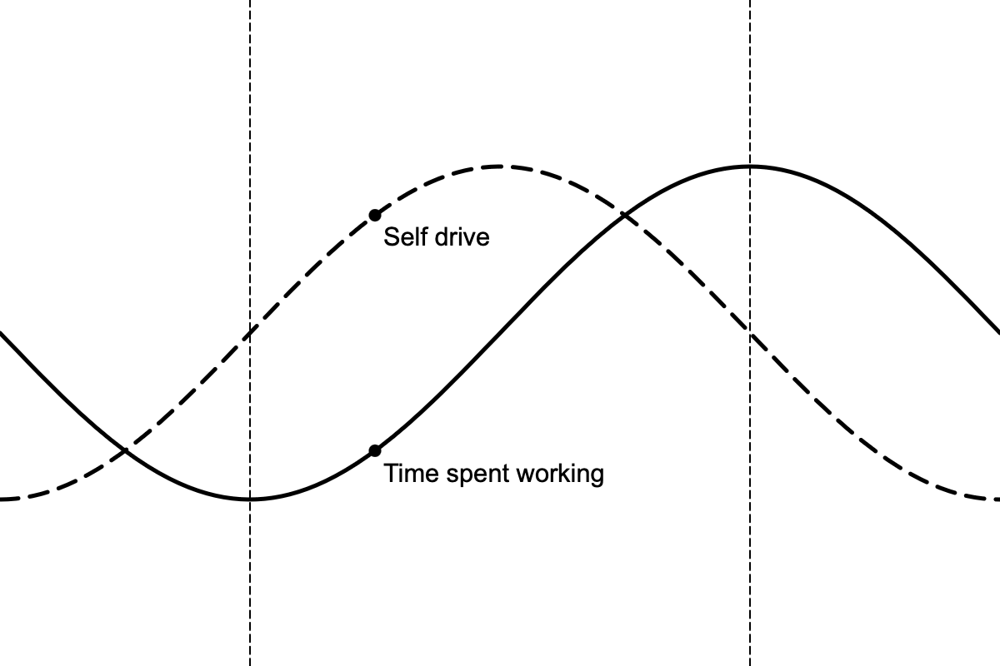

March 8, 2025
I work, a lot. I track around fifty to sixty hours of focused work time per week. At the end of the day, I'm often exhausted—too tired to do more than just reply to friends, take a shower, brush my teeth, and crash.
More than the hours though, work consumes my life. I've given up on social engagements and conventions to prioritize work deadlines. Recently, I worked until midnight with a colleague in order to unblock a different colleague, and ended up crashing on the first colleague's couch because I missed the train home.
I'm a workaholic.
This is something I've been reckoning with recently. I think there are a few main reasons:
I see an opportunity for career growth.
At the risk of sounding too much like a LinkedIn post, I'd be lying if I said it wasn't a factor. I work at a relatively young company, and the ratio of work to people is still quite high. I feel I have the opportunity to show off my skills, and, to that end, grow my career at an early stage of my life.
I'm having fun!
I enjoy building, solving problems, and discussing tradeoffs. I work with a bunch of really smart, talented, compassionate, and funny people.
My job also gives me some personal independence to pursue what I want, and I have taken full advantage of that: I've prototyped and shipped changes in days or weeks, and it's really addicting to see a one-off idea you had two weeks ago make it into production.
I'm learning.
I feel that each new skill I learn or piece of knowledge I gain compounds with everything before, and will likely compound with everything after. And unlike physical goods or money, it's not something that I can lose.
The fastest way to learn is to make mistakes, and, believe me, I have made a lot of mistakes. But making mistakes requires goodwill from the people around you, and that goodwill is rare. That goodwill accumulates when I succeed and diminishes when I fail, so I try my best to ensure that I always have goodwill saved up for when I need it, which I think further fuels my workaholism.
I also grow restless when I'm not learning. Part of me gets worried I'm not doing enough with my life, but that's something to unpack another time.
I wasn't always a workaholic. When I first moved to California about three years ago, I worked a lot less. Instead, I spent time with friends, went to conventions, ate at restaurants, and sang in a choir. But over time, I slowly grew more and more dissatisfied. I had that itch to learn and grow, and I didn't feel I was getting that day-to-day.
At that point in my life, my time spent working was low, but my self drive was rising. I was growing restless, so I found a new job, moved to New York, and worked my tail off.

If I plot my time spent working and my self drive over time, they trace out sine waves, with time spent working trailing self drive. I think it makes sense: if my self drive decreases, my time spent working also goes down. Then, I begin to grow restless: my self drive starts to increase, and I start to work harder. At some point, I grow tired and my self drive starts to decrease. The expectations I set for myself are still there, so I keep working, but I try and find ways to escape work more and more, until I'm back where I started.
This plot extends further back in time, and although past performance is not indicative of future results, I expect it will extend into the future as well.
Where I'm at now, I think I've just passed the crest of the "Time spent" wave (the dotted line to the right). I sense I'm about to make a big shift in my life, though I'm not sure what it'll be quite yet.